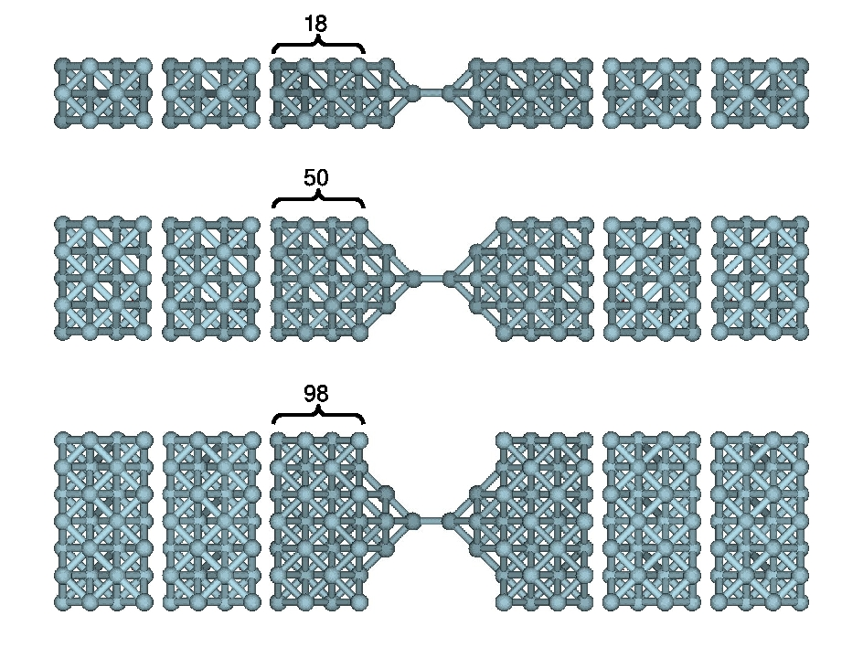
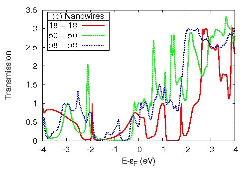
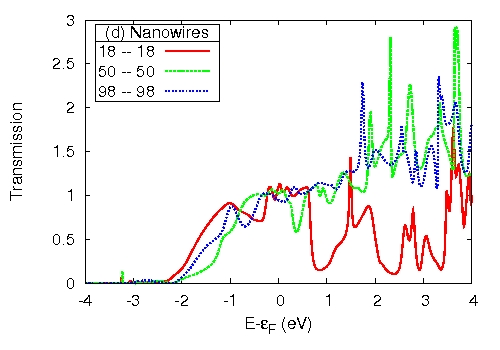

Atomistic NanoTransport
Examples Ant 1D




Transmission function or conductance of a series of Al (lower left) and Cu (lower right) nanocontacts for increasing section size of the nanowire electrodes as shown in the upper panel.